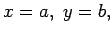
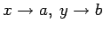
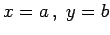

Stetigkeit
Eine Funktion von zwei Veränderlichen f(x,y) wird an der Stelle  d.h. im Punkt (a,b), stetig genannt, wenn
-
der Punkt (a,b) dem Definitionsbereich der Funktion angehört, wenn
-
der Grenzwert für  existiert und wenn
-
Anderenfalls besitzt die Funktion an der Stelle  eine Unstetigkeit.
Wenn eine Funktion in allen Punkten eines zusammenhängenden Gebietes definiert und stetig ist, dann wird sie stetig in diesem Gebiet genannt.
In Analogie dazu wird die Stetigkeit einer Funktion von mehr als zwei Veränderlichen definiert.